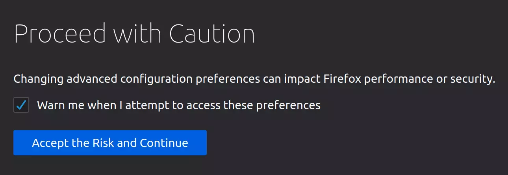

Changing the Firefox Reader Font
Table of Contents
What is this about?
I've been trying for a while now to figure out how to change the Firefox Reader font. The default (serifed-font) is Georgia, which is nice enough, but I like to change things up now and again. I would sometimes just edit the CSS in the Developer's Tools, but I finally stumbled upon how to do it so I'll save it here for my future self.
So how do you do it?
The procedure is pretty simple, this is it in outline:
- Create the
chromefolder for it if it doesn't exist. - Enable the use of this folder.
- Find the CSS you want to change.
- Add a
userContent.cssfile to thechromefolder and add the CSS you want to use to it. - Restart Firefox
Creating the chrome Folder
The configuration files you create go into a folder named "chrome". Firefox used to create it for you with example files but doesn't anymore so if you haven't created one you'll have to do so now - but where? It goes into your "profile" folder, but since you can have multiple configurations the path isn't fixed. There's multiple ways listed to find it on the Firefox Profile folder page. The way I did it was to enter about:support in the address bar.

This brings up the Troupbleshooting Information page.

The bottom of the screenshot is what we want.

The path displayed is your profile folder (/home/athena/.mozilla/firefox/j3hyuwod.default-1603227893962). You can click on the Open Directory button to open it with the GUI or use the path to navigate to it from your text editor. Within that folder create a folder named chrome. Why chrome when this is firefox? Chrome is apparently not related to google's chrome, but, according to Eric S. Raymond (and Wikipedia, etc.) refers to the GUI, or at least some aspects of it. Anyway.
userContent.css
In the chrome folder create a file named userContent.css (here's a mozillaZine article with some information about it) and add your CSS. Looking in the Firefox Inspector with the Reader View open it looks like it just uses the defaults.

But I don't want to change it for every web page so I added it to the .moz-reader-content selector.
.moz-reader-content {
font-family: "TeX Gyre Pagella", Gentium;
}
Which I also found using the Firefox Inspector.
Enable It
So, you might think that we're done, right? But it turns out that even though Firefox gives you the ability to add custom CSS it doesn't load it by default. I couldn't find anything on the mozillaZine site about how to enable it (although it might be there, I just didn't find it), but there's a www.userchrome.org site that has a page on setting up userChrome.css (which also talks about creating the chrome folder). userChrome.css is how you can style the Firefox GUI itself (the chrome) so in this case anything specific to that file isn't relevant to what we're doing here, but the rest of the page is.
The Steps
First navigate to about:config.
If you hadn't previously unchecked the Warn me when I attempt to access these preferences button you'll be greeted with a warning page.
Once you click on Accept the Risk and Continue or just hit enter, depending on your setup, you'll get to the Advanced Preferences page.

In the search box at the top of the page type in userprof.

If it's already set to true then you're all set, otherwise click on the toggle button on the right side.

This should flip it from false to true.
Oh, and just one more thing…
Changing the preferences to use the stylesheet doesn't load the actual stylesheet. To actually get it all working restart Firefox and try out the reader on a page.
In my case it changed the Wikipedia page on Rhetorica ad Herennium from this.

To this.

Not that dramatic in this case, but I still haven't found my favorite font. Also only the content was changed, not the headers… I'll have to look into that. Anyway, if you look in the Inspector the new CSS should show up.

End
So, that's one way to change the font for the Firefox Reader. Not exciting, but finding out how to do it was hard enough that I thought I should note it for later.